Installation
Install Code Assist
The Code Assist can be used with either Python or R.
There are three distinct approaches to installing the package for either Python or R:
The first approach is the easiest way to get started with Code Assist. But if you restart you workspace, then you will need to reinstall Code Assist. The second and third approaches will enable Code Assist more permanantly.
Install in a Workspace
If you do not already have a Jupyter, JupyterLab or RStudio workspace, then create and launch one now.
The next steps will depend on whether you are working with Python (Jupyter or JupyterLab) or R (RStudio workspace).
Run the following command in a notebook code cell:
!pip install --user low-code-assistant
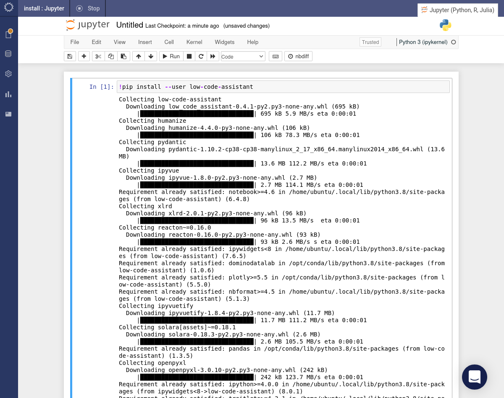
After the installation completes, refresh your browser tab. The button will appear in the Jupyter toolbar. Click this button to initialize the assistant.
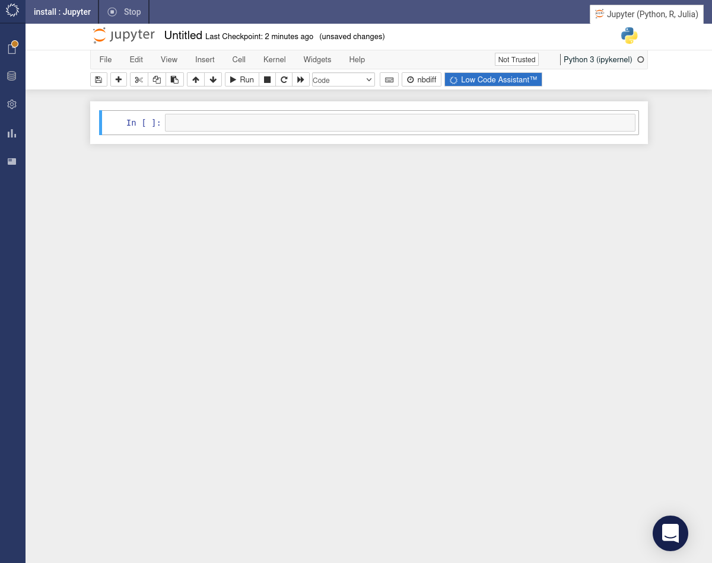
To upgrade an existing installation do:
!pip install --user --upgrade low-code-assistant
If you do not have the {devtools} package installed, then install it now by running the following command in the RStudio console.
install.packages("devtools")
Now install the Code Assist package.
pkg <- tempfile(fileext = '.tar.gz')
download.file('https://drive.google.com/uc?id=1xayKv7cbCFIcbyzUTYuWJEczBixA5D1Z', pkg)
devtools::install_local(pkg, upgrade = 'always')
🚨 If you encounter a timeout error during the installation, then make sure that you've selected a harware tier that allows egress. Otherwise, your workspace will not be able to reach GitHub to download the package.
After the installation completes, refresh your browser tab. Under the Addins menu option you should now see an ASSISTDOMINO section with various actions listed below. You can also confirm that the {assistDomino} package has been installed by searching in the Packages tab.
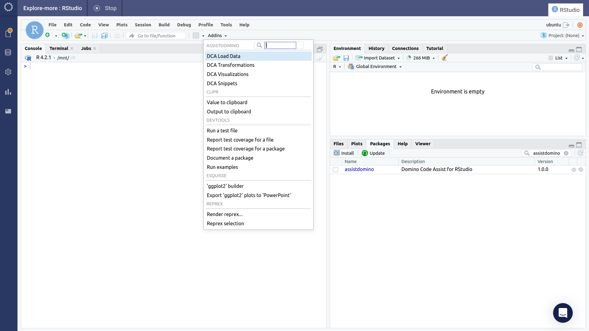
Install in a Project
A requirements.txt file is used to install Python packages into a new workspace created within a project. Navigate to Files to check whether you have a requirements.txt file.

If you do have a requirements.txt file then it will be listed (possibly among a selection of other files) then proceed as follows:
- Click on the
requirements.txtfile link. - Click the button. 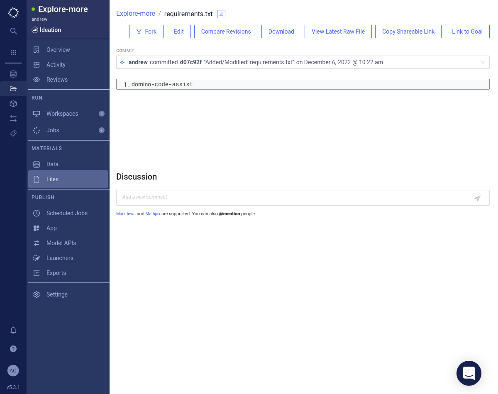
- Add the
low-code-assistantpackage to yourrequirements.txtfile. You can specify a version likelow-code-assistant==0.4.1. If you don't specify a version then the latest version will be installed. 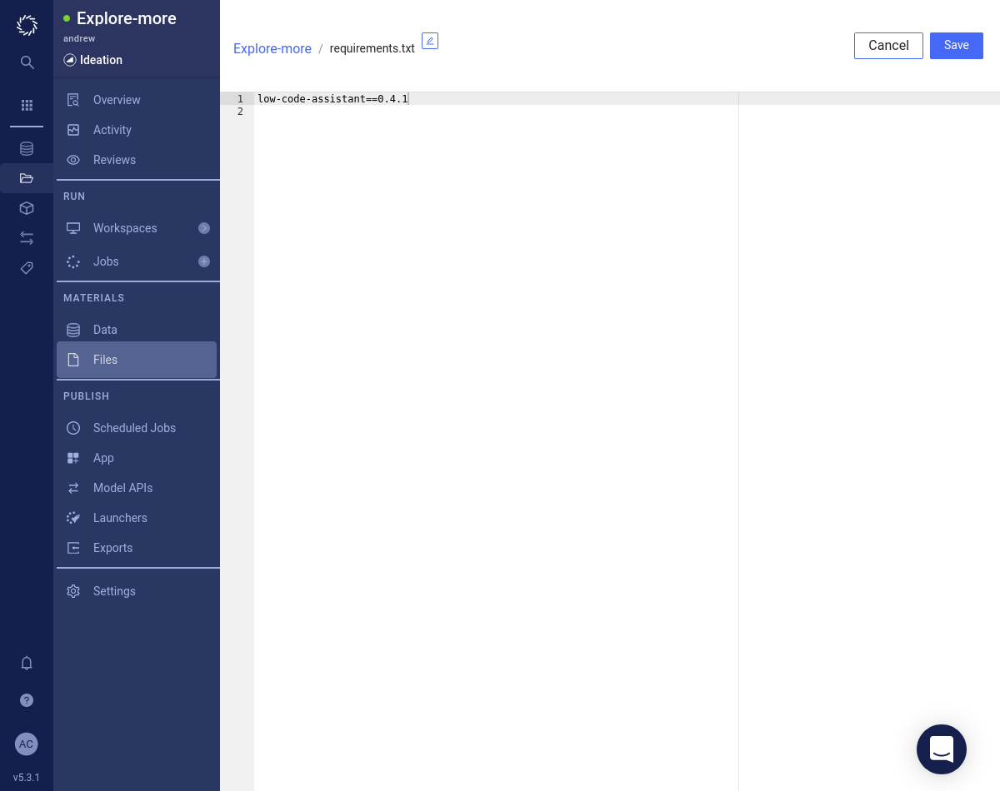 - Click the button.
If you don't have a requirements.txt file then do the following:
- Download our requirements.txt.
- Press the Upload button. Either drag and drop or browse to find the
requirements.txtfile. 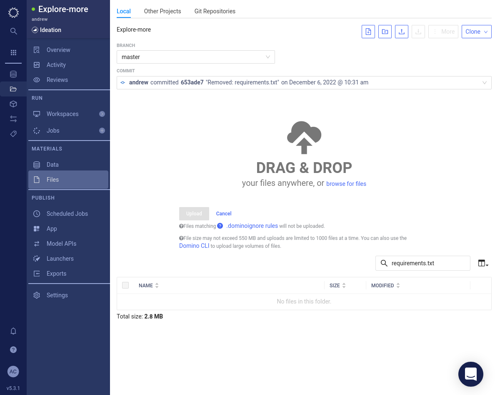 - Click the button. 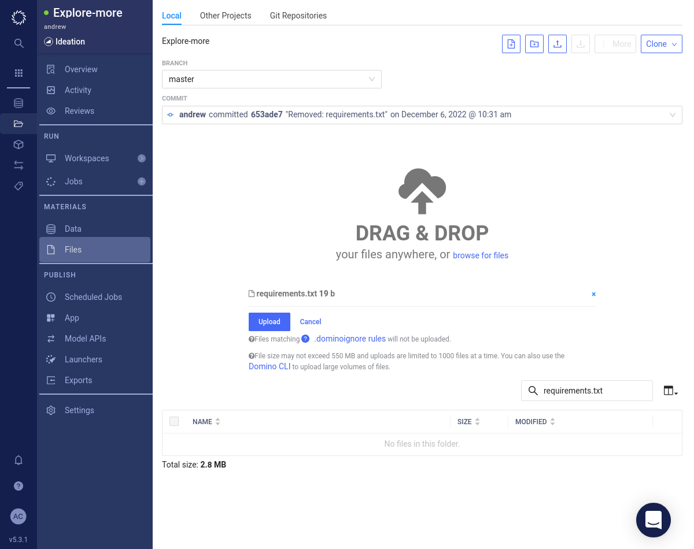
- Confirm that the
requirements.txtfile has been successfully uploaded.
Now create a new Jupyter or JupyterLab workspace with and the Code Assist button will be available.
Documentation pending.
Install in a Compute Environment
Enabling Code Assist in your organization's most used compute environments (CE) is the fastest way to deploy Code Assist. This way, Code Assist will appear automatically in any Jupyter or RStudio toolbar that is built from that CE. However, the CE will need to be rebuilt every time there is an Code Assist update. If CE's are not rebuilt weekly, we recommend enabling Code Assist at the project-level.
Documentation pending.
- Select Environments from the side navigation bar.
- Choose the environment in which Code Assist for R package should be installed.
- Click the Edit Definition button.
- Add the following line to the end of the
Dockerfilesection (but before the lastUSER ubuntucommand):RUN R -e "pkg <- tempfile(fileext = '.tar.gz'); download.file('https://drive.google.com/uc?id=1xayKv7cbCFIcbyzUTYuWJEczBixA5D1Z', pkg); devtools::install_local(pkg, upgrade = 'always');" RUN chown -R ubuntu:ubuntu /usr/local/lib/R/site-library - Click the Build button at the bottom of the page
This will install Code Assist for R in every workspace that uses the Domino environment.
Install from Source
This is the preferred approach in an air-gapped environment where you are unable to connect to the internet to install the package using of the previous approaches.
- Download the package onto your local machine. It would make sense to run this command in an empty directory because it will result in a large number of files being downloaded.s
pip download low-code-assistant - Get somebody on your IT team to transfer all of the files downloaded in the previous step across to your Domino environment.
- In your Domino environment run the following command to install the package. You might need to update the version of the package to be consistent with the files that you downloaded (the command below is for version 1.0.3).
pip install low_code_assistant-1.0.3-py2.py3-none-any.whl
- Download the package source from https://drive.google.com/uc?id=1xayKv7cbCFIcbyzUTYuWJEczBixA5D1Z onto your local machine. One might do this as follows:
wget https://drive.google.com/uc?id=1xayKv7cbCFIcbyzUTYuWJEczBixA5D1Z -O lca-rstudio.tar.gz - Get somebody on your IT team to transfer the downloaded file from the previous step across to your Domino environment.
- In your Domino environment run the following command to install the package.s
R -e 'remotes::install_local("lca-rstudio.tar.gz")'
Initialize
If you have followed the installation instructions, you should see a blue button in the toolbar of your Jupyter notebook.
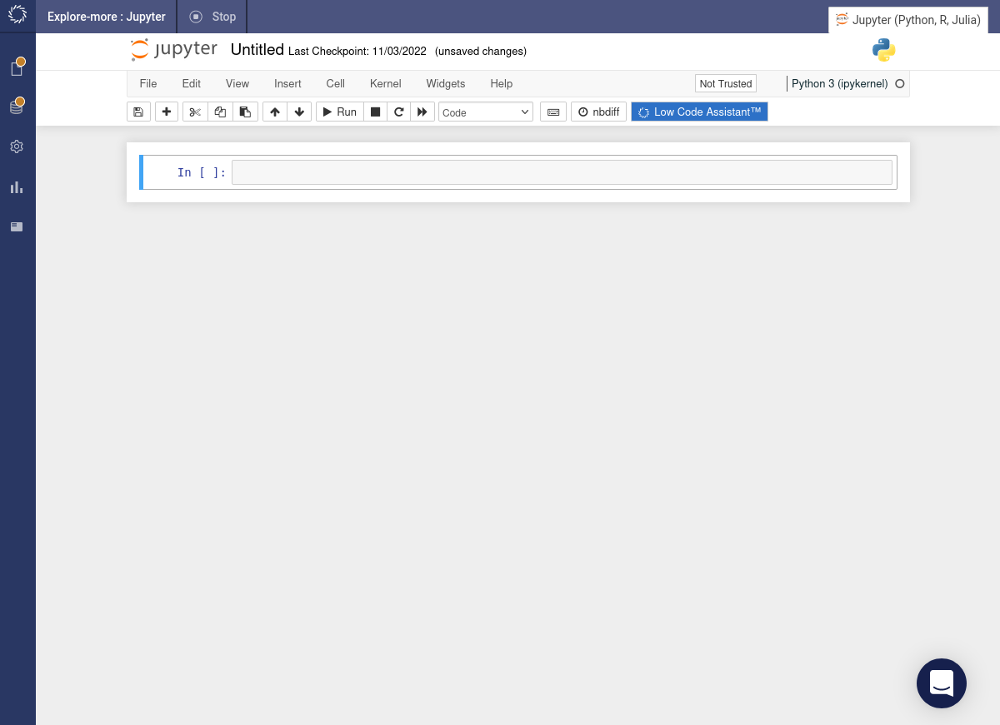
Code Assist can be started by clicking the button in the toolbar. It will insert a code snippet in a new code cell and execute it.
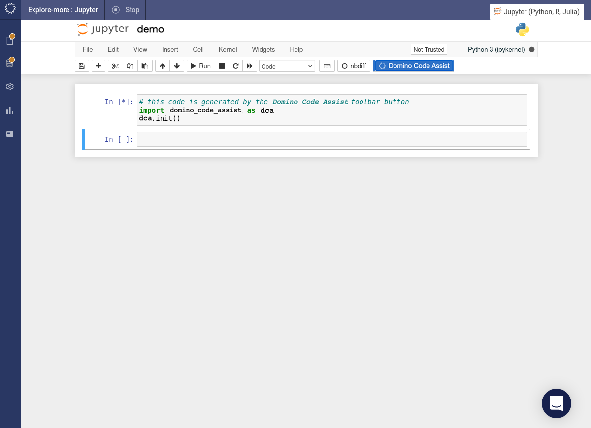
If you now hover above a code cell, you should see a blue icon  to the right.
to the right.
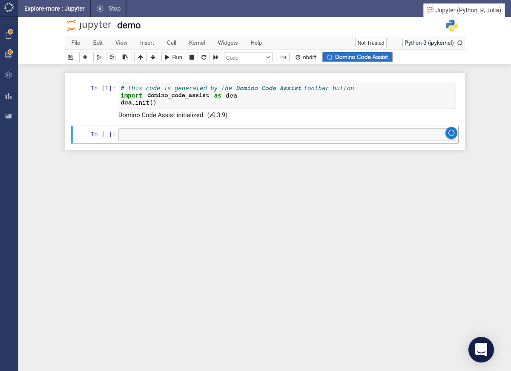
If you hover above the  icon, it will show a popup menu.
icon, it will show a popup menu.
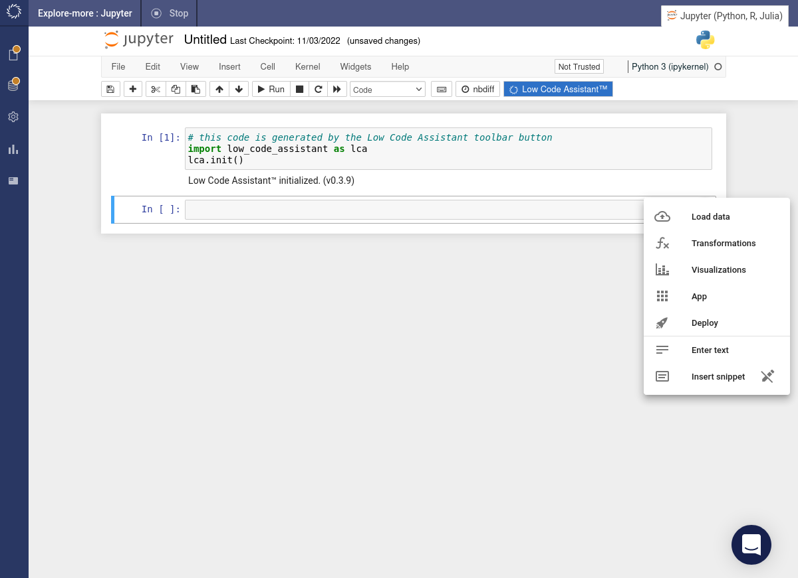
There is no initialization required in R. Various Code Assist actions will be listed under the Addins menu option.
Check Version
To check the version of Code Assist installed, run the following:
import low_code_assistant
low_code_assistant.__version__
packageVersion("assistDomino")